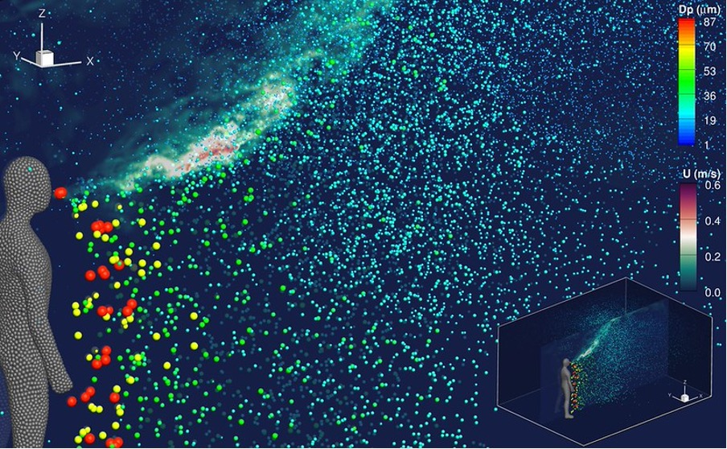
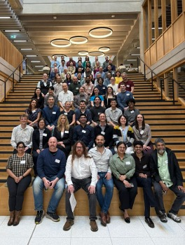
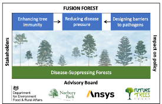

xFlow is a research group led by Dr Bruño Fraga whose focus is modelling complex flows for environmental and healthcare applications. We develop in-house algorithms and numerical models to solve multiphase flows, with a particular emphasis in particle-laden or dispersed flows, where one of the phases is split in many small portions and submerged in a fluid matrix. We have a solid track record creating models for fluid-solid interaction, four-way coupled particle-laden flows, Eulerian-Lagrangian frameworks or chemistry-fluids coupling among other things. In terms of applications, some key current topics are the spread of expiratory bioaerosols, transport of microplastics in freshwater systems, flow through porous media, multiphase turbulence and bubble plume dynamics. Check out projects and publications below to learn more, and get in touch if you want to try our base model, MultiFlow3D.


Fusion Forest - Fusion Forest will provide strategies and tools to enhance the natural immunity of forests and halt tree epidemics. We combine knowledge on tree immunity with ecology and physics. We will increase forest resilience by proposing combinations of tree species and priming of defence. We will bring together ecological and physical modelling to create a tool – ForestFlow – to predict the spread of fungal spores and design physical barriers to it. The decisions we make today will determine the forest landscapes of future generations. Fusion Forest will prevent high disease pressures and enhance tree immunity ahead of the occurrence of outbreaks.